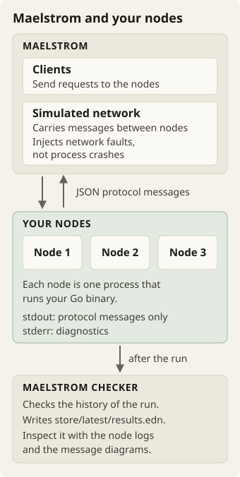

Go · Distributed systems · Build and learn
Work through Gossip Glomers
Build small distributed systems. Break their networks, and check whether your reasoning survives. Start with echo and finish with transactions.
The challenge
This brief is a guided route through the distributed-systems challenges from Fly.io. Jepsen’s Maelstrom tests them. Each process is a node. Messages travel over simulated networks, and Maelstrom checks histories. The linked official stage specifications stay authoritative. This page adds a rhythm of build and check. It does not add a replacement consistency model.
Use Go and the Maelstrom Go library, github.com/jepsen-io/maelstrom/demo/go. Do not use other third-party modules. Work with your AI pair for explanations and implementation. Ask what must stay true in these conditions:
- A message arrives late.
- A message arrives more than once.
- A message cannot cross a partition.
After your own approach passes, compare it with published solutions. Record what you learn.
Glossary
This brief uses each term below with one meaning only.
- Maelstrom: the Jepsen test harness. It runs your nodes, sends client requests, carries messages over a simulated network and checks histories.
- Node: one process that runs your Go binary in a Maelstrom test.
--node-countsets the number of nodes. - Message: one JSON protocol message. It has a source, a destination and a body. The examples in this brief show bodies only.
- Server message: a message from one node to another node. The results report server messages per operation.
- Workload: the test that Maelstrom runs. The
-wflag selects it, for example-w broadcast. - RPC: a request from a node to another node or to a Maelstrom service, such as
seq-kv, that expects a reply. - Broadcast: a request that gives a node an integer value to store. From stage 3b, the node also shares the value with the other nodes.
- Topology: the links between nodes that a node uses to share values. Maelstrom supplies one in a
topologymessage. - Partition: a network fault. Some nodes cannot exchange messages until the partition heals.
--nemesis partitioninjects partitions. - Converge: reach the same final values on all nodes after communication resumes.
- History: the record of the operations in one run. Maelstrom checks it for a valid result.
- Sequential consistency: the consistency model of the
seq-kvservice. Thelin-kvservice gives stronger consistency. - Total availability: each client request completes, even when its node cannot reach other nodes.
--availability totalselects it. - Stage: one official challenge, such as 3a. This brief has 14 stages.
Set up once
Install these tools:
- Go
- a JDK that is compatible with Maelstrom
- Graphviz
- gnuplot
These examples use Maelstrom 0.2.3. Fly’s challenge instructions use the same release. Record the actual versions of your tools and of the Go library in your README.
mkdir gossip-work
cd gossip-work
GG_ROOT="$(pwd)"
mkdir -p "$GG_ROOT/bin"
curl -fLO https://github.com/jepsen-io/maelstrom/releases/download/v0.2.3/maelstrom.tar.bz2
tar xjf maelstrom.tar.bz2
"$GG_ROOT/maelstrom/maelstrom" --helpExpect usage text. Use the GG_ROOT of this terminal for the commands below. Create six source directories in it:
echounique-idsbroadcastcounterkafkatxn
In each directory, initialize a module. Then fetch the library. For example:
mkdir -p "$GG_ROOT/echo"
cd "$GG_ROOT/echo"
go mod init example.com/maelstrom-echo
go get github.com/jepsen-io/maelstrom/demo/goWrite the main package of each binary. Then build it from its source directory to $GG_ROOT/bin/maelstrom-NAME. Replace NAME with the directory name. Rebuild after every change. The Maelstrom commands below run from the extracted Maelstrom directory.
The protocol examples show message bodies only. They omit message IDs, so that they are easier to read. Real messages also include a source, a destination and fields that connect each reply to its request. Use the node and reply handling of the library.
Write diagnostics to stderr, so that stdout contains only protocol messages. Maelstrom injects network faults, not process crashes. Thus these challenges do not require disk persistence.

- Maelstrom clients send requests to your nodes.
- The simulated network carries messages between nodes. It injects network faults, not process crashes.
- Each node is one process that runs your Go binary. Its stdout carries protocol messages only. Its stderr carries diagnostics.
- After the run, Maelstrom checks the history and writes
store/latest/results.edn. - Inspect that file with the node logs and the message diagrams.
The expected outputs are targets. They are not records of real runs. Every stage requires a valid result. Inspect these items:
store/latest/results.edn- node logs
- message diagrams
./maelstrom serve serves a local results browser. A protocol example alone does not prove correctness.
1 — Echo
Make a node receive an echo request. The node returns the same value with the type echo_ok. Keep the connection between the reply and its request. This stage is your first check that a Go binary can participate in Maelstrom.
Example request body
{"type":"echo","echo":"hello relay"}Expected response body
{"type":"echo_ok","echo":"hello relay"}From the echo directory, build with go build -o "$GG_ROOT/bin/maelstrom-echo" .. Check how the node handles malformed messages. Do not contaminate stdout with debug prints.
Run it
cd "$GG_ROOT/maelstrom"
./maelstrom test --bin "$GG_ROOT/bin/maelstrom-echo" -w echo --node-count 1 --time-limit 10Expected
Everything looks good!Official stage: 1 — Echo.
AI mentor prompt
I am on challenge 1, echo. Ask me how my node connects each reply to its request, and why debug prints must not go to stdout. Give one hint at a time. Do not edit files. Do not show the solution unless I ask for it.
2 — Unique IDs
Create the unique-ids binary. Every generate request must return a globally unique ID. This rule applies also while nodes cannot communicate. You choose the representation. A process-local counter alone is not sufficient across multiple nodes.
Example request body
{"type":"generate"}Expected response body
{"type":"generate_ok","id":"n1-42"}The example ID is only an illustration. Check that IDs are unique. Do not check for that literal value. Explain why these requests cannot collide:
- concurrent requests on one node
- requests on different nodes
Availability must not depend on a connection to a coordinator.
Run it
cd "$GG_ROOT/maelstrom"
./maelstrom test --bin "$GG_ROOT/bin/maelstrom-unique-ids" -w unique-ids --time-limit 30 --rate 1000 --node-count 3 --availability total --nemesis partitionExpected
:valid? trueOfficial stage: 2 — Unique IDs.
AI mentor prompt
I am on challenge 2, unique IDs. Ask me why my IDs cannot collide on one node, across nodes and during a partition. Give one hint at a time. Do not edit files. Do not show the solution unless I ask for it.
3a — Remember broadcasts on one node
Start the broadcast binary with handlers for broadcast, read and topology. Store the integer values that the node receives as a set. A broadcast returns broadcast_ok. A topology message returns topology_ok. A read returns the known values in any order.
Example request body
{"type":"broadcast","message":7}Expected response body
{"type":"broadcast_ok"}After the node stores 7 and 11, a read can return {"type":"read_ok","messages":[7,11]}. If 7 arrives more than once, the node must not create duplicates. Unit-test deduplication before you add propagation over the network.
Run it
cd "$GG_ROOT/maelstrom"
./maelstrom test --bin "$GG_ROOT/bin/maelstrom-broadcast" -w broadcast --node-count 1 --time-limit 20 --rate 10Expected
:valid? trueOfficial stage: 3a — Remember broadcasts on one node.
AI mentor prompt
I am on challenge 3a, broadcasts on one node. Ask me how my set handles a value that arrives twice, and how my unit test proves it. Give one hint at a time. Do not edit files. Do not show the solution unless I ask for it.
3b — Share broadcasts across nodes
Propagate the stored values to the other nodes. You may follow the supplied topology or choose your own. Do not change the client protocol. On a healthy network, make values reach every node within a few seconds.
Example request body
{"type":"read"}Expected response body
{"type":"read_ok","messages":[7,11]}That example is a converged read. It follows broadcasts of 7 and 11 to any nodes, with no other writes. Design a small local test that delivers the same internal message twice. The second delivery should not change the final set.
Run it
cd "$GG_ROOT/maelstrom"
./maelstrom test --bin "$GG_ROOT/bin/maelstrom-broadcast" -w broadcast --node-count 5 --time-limit 20 --rate 10Expected
:valid? trueOfficial stage: 3b — Share broadcasts across nodes.
AI mentor prompt
I am on challenge 3b, broadcasts across nodes. Ask me which topology I use and how a value reaches every node. Give one hint at a time. Do not edit files. Do not show the solution unless I ask for it.
3c — Survive a network partition
Continue to broadcast while links are unavailable. Make the nodes converge when communication resumes. Reads return copies of local state. Suppose that a node learns a value just before a partition. Consider how that value eventually reaches a node that missed its first delivery.

- A client broadcasts 7 to n1. n1 stores 7 and returns
broadcast_ok. - n1 shares 7 with n2. n2 stores 7. n3 does not have 7 yet.
- A partition starts. n2 cannot deliver 7 to n3. A read on n3 returns its local state, without 7.
- The partition heals. n3 eventually receives the 7 that it missed. Your design decides how.
- All nodes converge. Every read returns
read_okwith 7 in its messages.
Example request body
{"type":"read"}Expected response body
{"type":"read_ok","messages":[7,11]}The response is an eventual result after the partition heals. It is not a promise that isolated nodes already agree. In a client handler, do not wait forever for an unreachable node.
Run it
cd "$GG_ROOT/maelstrom"
./maelstrom test --bin "$GG_ROOT/bin/maelstrom-broadcast" -w broadcast --node-count 5 --time-limit 20 --rate 10 --nemesis partitionExpected
:valid? true
All acknowledged values converge by the end of the run.The second output line states the required outcome. It is not literal Maelstrom output. Pass three consecutive runs. Record a failure that you repaired.
Official stage: 3c — Survive a network partition.
AI mentor prompt
I am on challenge 3c, broadcasts during a partition. Ask me how a value that a node missed during a partition reaches it after the partition heals. Give one hint at a time. Do not edit files. Do not show the solution unless I ask for it.
3d — Reduce broadcast latency
Keep the same broadcast/read/topology API. A read still returns a read_ok set of values. An optimization must not change its meaning. Now run 25 nodes with 100 ms message latency. Measure the count of server-to-server messages and the stable broadcast latencies.
Example request body
{"type":"read"}Expected response after the example values are available
{"type":"read_ok","messages":[7]}Run it
cd "$GG_ROOT/maelstrom"
./maelstrom test --bin "$GG_ROOT/bin/maelstrom-broadcast" -w broadcast --node-count 25 --time-limit 20 --rate 100 --latency 100Expected
:valid? true
server messages/op < 30
median stable latency < 400 ms
maximum stable latency < 600 msThe numeric lines are acceptance thresholds. They are not example measurements. Read :net :servers :msgs-per-op and :workload :stable-latencies in results.edn. Repeat the command with --nemesis partition. Correctness must still pass. Those latency budgets apply to the run on a healthy network.
Official stage: 3d — Reduce broadcast latency.
AI mentor prompt
I am on challenge 3d, broadcast latency. Ask me to compare my messages per operation and my stable latencies with the thresholds. Give one hint at a time. Do not edit files. Do not show the solution unless I ask for it.
3e — Trade some latency for fewer messages
Use the same protocol and workload. Reduce the network cost further. For example, after two broadcasts of 7 and 11, reads must still converge to a set that contains both. This rule applies whether the two values travel together or separately. Compare your batching and topology choices with your previous design.
Example request body
{"type":"read"}Expected response after the example values are available
{"type":"read_ok","messages":[7,11]}Run it
cd "$GG_ROOT/maelstrom"
./maelstrom test --bin "$GG_ROOT/bin/maelstrom-broadcast" -w broadcast --node-count 25 --time-limit 20 --rate 100 --latency 100Expected
:valid? true
server messages/op < 20
median stable latency < 1000 ms
maximum stable latency < 2000 msRecord the measured figures for both designs, with the workload settings. Do not invent a universal performance number. Run this design again with --nemesis partition to check correctness too. Explain why latency can increase when the message count decreases.
Official stage: 3e — Trade some latency for fewer messages.
AI mentor prompt
I am on challenge 3e, fewer messages. Ask me to compare my 3d and 3e measurements and to explain the trade between latency and message count. Give one hint at a time. Do not edit files. Do not show the solution unless I ask for it.
4 — Build a grow-only counter
Create the counter binary with add and read handlers. Use the Maelstrom seq-kv service to store the counter. Concurrent acknowledged additions must not overwrite each other. This rule applies despite the sequential consistency of the backing store.
Example request body
{"type":"add","delta":5}Expected response body
{"type":"add_ok"}From a fresh counter, additions of 5 and 8 should eventually produce {"type":"read_ok","value":13} on every node. Reads may lag while writes are active. Final reads must converge to the correct total. Explain how retries avoid double-counting.
Run it
cd "$GG_ROOT/maelstrom"
./maelstrom test --bin "$GG_ROOT/bin/maelstrom-counter" -w g-counter --node-count 3 --rate 100 --time-limit 20 --nemesis partitionExpected
:valid? truePass three consecutive runs. Unit-test any merge logic separately from RPCs.
Official stage: 4 — Build a grow-only counter.
AI mentor prompt
I am on challenge 4, a grow-only counter on seq-kv. Ask me why concurrent additions cannot overwrite each other and why a retry cannot count an addition twice. Give one hint at a time. Do not edit files. Do not show the solution unless I ask for it.
5a — Build a single-node log
Create the kafka binary. Each string key identifies an append-only log. Assign increasing unique offsets within a log. Gaps between offsets are acceptable. Your node must do these operations:
- Poll from an inclusive offset.
- Track committed offsets.
- List the committed offsets for the requested keys.
A poll need not reveal a new write immediately. A poll must not lose earlier entries.
| Request | Response |
|---|---|
{"type":"send","key":"orders","msg":7} | {"type":"send_ok","offset":0} |
{"type":"poll","offsets":{"orders":0}} | {"type":"poll_ok","msgs":{"orders":[[0,7]]}} |
{"type":"commit_offsets","offsets":{"orders":0}} | {"type":"commit_offsets_ok"} |
{"type":"list_committed_offsets","keys":["orders"]} | {"type":"list_committed_offsets_ok","offsets":{"orders":0}} |
Zero is an illustrative starting offset. Committed-offset results may omit missing keys.
Run it
cd "$GG_ROOT/maelstrom"
./maelstrom test --bin "$GG_ROOT/bin/maelstrom-kafka" -w kafka --node-count 1 --concurrency 2n --time-limit 20 --rate 1000Expected
:valid? trueOfficial stage: 5a — Build a single-node log.
AI mentor prompt
I am on challenge 5a, a single-node log. Ask me how I assign offsets and what a poll from an inclusive offset returns. Give one hint at a time. Do not edit files. Do not show the solution unless I ask for it.
5b — Share the log across nodes
Distribute the same API across two nodes. In this version, use the provided lin-kv service for coordination. Its stronger consistency is useful when you allocate offsets or publish shared log state. Explain where your design relies on that guarantee.
Example request body
{"type":"poll","offsets":{"orders":0}}Expected response body
{"type":"poll_ok","msgs":{"orders":[[0,7]]}}After the write from the previous example is shared, a different node must be able to return it. Keep offsets unique under concurrent sends. Record the server messages per operation. This number is the baseline for the next step.
Run it
cd "$GG_ROOT/maelstrom"
./maelstrom test --bin "$GG_ROOT/bin/maelstrom-kafka" -w kafka --node-count 2 --concurrency 2n --time-limit 20 --rate 1000Expected
:valid? trueOfficial stage: 5b — Share the log across nodes.
AI mentor prompt
I am on challenge 5b, a log across two nodes. Ask me where my design relies on the stronger consistency of lin-kv. Give one hint at a time. Do not edit files. Do not show the solution unless I ask for it.
5c — Make the log cheaper
Inspect the message diagram and results.edn. Reduce redundant communication or contention. Keep the same client exchanges. A poll for orders from offset 0 still returns the available [offset,message] pairs.
- Choose one change.
- Predict its effect.
- Compare equivalent runs.
Your final version must use fewer server messages per operation than your recorded 5b baseline. It must also stay correct. Do not lose writes to get better metrics.
Example request body
{"type":"poll","offsets":{"orders":0}}Expected response after the example values are available
{"type":"poll_ok","msgs":{"orders":[[0,7]]}}Run it
cd "$GG_ROOT/maelstrom"
./maelstrom test --bin "$GG_ROOT/bin/maelstrom-kafka" -w kafka --node-count 2 --concurrency 2n --time-limit 20 --rate 1000Expected
:valid? true
server messages/op below your 5b baselineRecord these values:
- both measurements
- latency
- availability
This stage has no universal numeric target. The second output line is your comparison criterion.
Official stage: 5c — Make the log cheaper.
AI mentor prompt
I am on challenge 5c, a cheaper log. Ask me for my one change and my prediction before I compare the result with my 5b baseline. Give one hint at a time. Do not edit files. Do not show the solution unless I ask for it.
6a — Execute local transactions
Create the txn binary. A request contains ordered read/write triples. Your node must do these operations:
- Add the result to each read.
- Keep each write operation.
- Return
nullfor absent keys.
Start with one node under the read-uncommitted checker.
Example request body
{"type":"txn","txn":[["r",1,null],["w",1,9]]}Expected response body
{"type":"txn_ok","txn":[["r",1,null],["w",1,9]]}This response assumes that key 1 was absent. A later read of key 1 should return 9. Explain how visible the intermediate state of a transaction is to concurrent handlers.
Run it
cd "$GG_ROOT/maelstrom"
./maelstrom test --bin "$GG_ROOT/bin/maelstrom-txn" -w txn-rw-register --node-count 1 --time-limit 20 --rate 1000 --concurrency 2n --consistency-models read-uncommitted --availability totalExpected
:valid? trueOfficial stage: 6a — Execute local transactions.
AI mentor prompt
I am on challenge 6a, local transactions. Ask me what concurrent handlers can see while my node executes a transaction. Give one hint at a time. Do not edit files. Do not show the solution unless I ask for it.
6b — Replicate without losing availability
Extend the transaction service to two nodes. Keep read-uncommitted consistency and total availability. Do not block client completion on communication with an isolated node. Keep the same request/reply shape.
Example request body
{"type":"txn","txn":[["w",2,17]]}Expected response body
{"type":"txn_ok","txn":[["w",2,17]]}The write can complete during a partition. A remote read need not observe 17 immediately. Run on a healthy network first:
Run it
cd "$GG_ROOT/maelstrom"
./maelstrom test --bin "$GG_ROOT/bin/maelstrom-txn" -w txn-rw-register --node-count 2 --time-limit 20 --rate 1000 --concurrency 2n --consistency-models read-uncommitted --availability totalExpected
:valid? trueThen inject partitions:
cd "$GG_ROOT/maelstrom"
./maelstrom test --bin "$GG_ROOT/bin/maelstrom-txn" -w txn-rw-register --node-count 2 --time-limit 20 --rate 1000 --concurrency 2n --consistency-models read-uncommitted --availability total --nemesis partitionBoth runs must be valid. Explain your ordering rules and your replication rules. Total availability does not mean that every consistency model can be supported.
Official stage: 6b — Replicate without losing availability.
AI mentor prompt
I am on challenge 6b, replicated transactions. Ask me how a client request completes when the other node is isolated. Give one hint at a time. Do not edit files. Do not show the solution unless I ask for it.
6c — Strengthen transaction visibility
Keep total availability. Now pass the read-committed checker. Intermediate or aborted transaction writes must not leak to other transactions. Reason about the full model of the checker, not only one successful example.
Example request body
{"type":"txn","txn":[["w",1,10],["w",1,11]]}Expected response body
{"type":"txn_ok","txn":[["w",1,10],["w",1,11]]}Another transaction must not observe the intermediate 10 from this transaction. If you abort for a conflict, the Maelstrom error code is 30. Aborted values must stay invisible. Reads may still be stale across nodes.
Run it
cd "$GG_ROOT/maelstrom"
./maelstrom test --bin "$GG_ROOT/bin/maelstrom-txn" -w txn-rw-register --node-count 2 --concurrency 2n --time-limit 20 --rate 1000 --consistency-models read-committed --availability total --nemesis partitionExpected
:valid? trueOfficial stage: 6c — Strengthen transaction visibility.
AI mentor prompt
I am on challenge 6c, read-committed transactions. Ask me how my design keeps intermediate and aborted writes invisible to other transactions. Give one hint at a time. Do not edit files. Do not show the solution unless I ask for it.
Finish with evidence
Keep these items:
- all six Go projects
- the exact Maelstrom commands
- the tool versions
In each module, run go vet ./.... Then run go test ./.... Unit-test pure logic, such as:
- ID generation
- deduplication
- merges
- ownership hashing
Rebuild each binary with the race detector. For example, from the broadcast source directory:
go build -race -o "$GG_ROOT/bin/maelstrom-broadcast" .Repeat its Maelstrom commands. The runs must stay valid, with no race reports in node logs. Keep builds without the race detector for comparable efficiency measurements. The race instrumentation changes timing.
Write a short NOTES.md entry for each stage. Include these items:
- your approach
- a failure and what it taught you
- your consistency and availability assumptions
- tradeoffs
Copy the measured 3d/3e and 5b/5c results into a comparison table. Explain why the final design meets its model. Do not rely only on a green run. Mark unfinished stages honestly.
If a run fails, keep its history before the next run replaces the latest pointer. Then do these steps:
- Reproduce the failure.
- Inspect the relevant messages.
- Make one reasoned change with your AI pair.
Three passing repetitions are useful evidence. They are not a proof that all executions are safe.